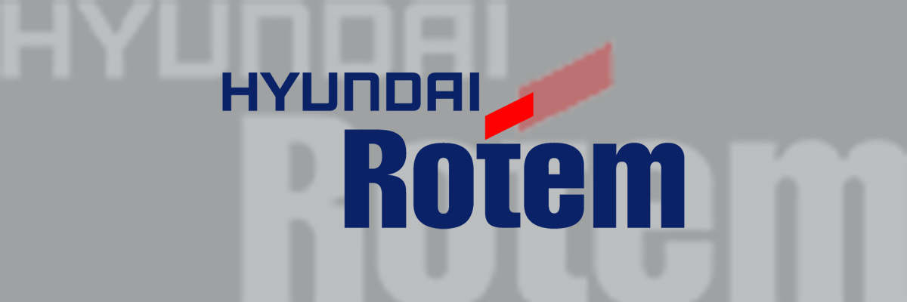

> 회사소개 > CI
CI
CI를 통해 현대로템의 정체성과 상징성을 표현합니다.
Word Mark
‘HYUNDAI ROTEM’의 WORD MARK는
견고한 고딕계열의 서채로 신뢰감을 주는 이미지로 표현하였으며, ‘t’위의 모티프는 혁신적인 첨단기술(High Technology)을 바탕으로 고도 성장하는 현대로템의 이미지를 상징한다. Blue Color는 첨단기술과 밝은 미래를, Red Color는 구성원의 진취성과 무한한 에너지를 나타내고 있다.
Logotype
-
국문정식사명
현대로템주식회사
-
국문약칭사명
현대로템(주)
-
영문정식사명
HYUNDAI ROTEM COMPANY
로고타입은 워터마크와 더불어 현대로템의 이미지를 전달하는 중요한 기본요소로 워터마크가 주는 이미지와 조화될 수 있도록 디자인 되었으며 각각의 글자꼴 형태에 따라 비례 조정한 것이므로 글자의 꼴, 굵기, 비례 등을 임의로 변경하여서는 안된다.
Color System
Rotem Blue
PANTONE 288C
Process Color : C100 M70 Y0 K30
RGB Color : R0 G40 B122
Rotem Red
PANTONE 186C
Process Color : C0 M100 Y100 K0
RGB Color : R255 G0 B0